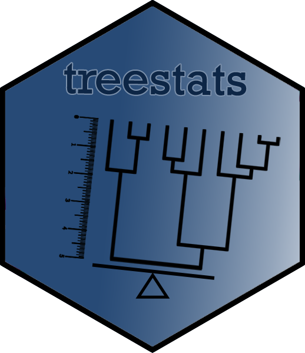

The treestats R package contains rapid, C++ based, functions to calculate summary statistics on phylogenies. For some functions (but not all, see below), the phylogenies are required to be ultrametric and/or binary.
Getting started
Installation
To get started, you can either install from CRAN or use the latest version from GitHub:
install.packages("treestats") # install from CRAN
# use the devtools package to install latest version from GitHub:
install.packages("devtools")
devtools::install_github("thijsjanzen/treestats")Basic usage
Given a tree (for example a simulated tree, as in the code example), you can either access individual statistics, or calculate all currently implemented statistics:
focal_tree <- ape::rphylo(n = 10, birth = 1, death = 0)
colless_stat <- treestats::colless(focal_tree)
all_stats <- treestats::calc_all_stats(focal_tree)List of statistics
The following summary statistics are included:
| Statistic | Information | Normalization | Assumes Ultrametric tree | Requires binary tree | Reference |
| area_per_pair | Topology | Yule | NO | YES | Lima et al., 2020 |
| average_leaf_depth | Topology | Yule | NO | YES | Shao & Sokal, 1990 |
| avg_ladder | Topology | None | NO | YES | Kendall et al., 2018 |
| avg_vert_depth | Topology | None | NO | NO | Colijn & Gardy, 2014 |
| b1 | Topology | Tips | NO | NO | Shao & Sokal, 1990 |
| b2 | Topology | Yule | NO | NO | Shao & Sokal, 1990 |
| beta | Topology | None | NO | YES | Aldous, 1996 |
| blum | Topology | None | NO | YES | Blum & François, 2006 |
| cherries | Topology | Yule | NO | YES | McKenzie et al., 1999 |
| colless | Topology | Yule | NO | YES | Colless, 1982 |
| colless_corr | Topology | None | NO | YES | Heard, 1992 |
| colless_quad | Topology | None | NO | YES | Bartoszek et al., 2021 |
| crown_age | Branching times | None | NO | NO | |
| diameter | Topology | None | NO | YES | Chindelevitch et al., 2021 |
| double_cherries | Topology | None | NO | YES | Chindelevitch et al., 2021 |
| eigen_centrality | Topology | None | NO | NO | Chindelevitch et al., 2021 |
| eigen_centralityW | Topology + branch lengths | None | NO | NO | Chindelevitch et al., 2021 |
| ew_colless | Topology | None | NO | YES | Mooers & S. B. Heard, 1997 |
| four_prong | Topology | None | NO | YES | Chindelevitch et al., 2021 |
| gamma | Branching times | None | YES | NO | Pybus & Harvey, 2000 |
| i_stat | Topology | None | NO | YES | Fusco & Cronk, 1995 |
| il_number | Topology | Tips | NO | NO | Kendall et al., 2018 |
| imbalance_steps | Topology | Tips | NO | NO | Janzen & Etienne, 2024 |
| j_one | Topology | None | NO | YES | Lemant et al., 2022 |
| j_stat | Topology + branch lengths | None | NO | NO | Izsák & Papp, 2000 |
| laplace_spectrum_a | Topology + branch lengths | None | YES | NO | Lewitus & Morlon, 2016 |
| laplace_spectrum_e | Topology + branch lengths | None | YES | NO | Lewitus & Morlon, 2016 |
| laplace_spectrum_g | Topology + branch lengths | None | YES | NO | Lewitus & Morlon, 2016 |
| laplace_spectrum_p | Topology + branch lengths | None | YES | NO | Lewitus & Morlon, 2016 |
| max_adj | Topology + branch lengths | None | NO | YES | Chindelevitch et al., 2021 |
| max_betweenness | Topology | Tips | NO | YES | Chindelevitch et al., 2021 |
| max_closeness | Topology | Tips | NO | YES | Chindelevitch et al., 2021 |
| max_closenessW | Topology + branch lengths | None | NO | YES | Chindelevitch et al., 2021 |
| max_del_width | Topology | Tips | NO | NO | Colijn & Gardy, 2014 |
| max_depth | Topology | Tips | NO | NO | Colijn & Gardy, 2014 |
| max_ladder | Topology | None | NO | YES | Kendall et al., 2018 |
| max_laplace | Topology + branch lengths | None | NO | YES | Chindelevitch et al., 2021 |
| max_width | Topology | Tips | NO | NO | Colijn & Gardy, 2014 |
| mean_branch_length | Topology + branch lengths | None | NO | NO | Janzen & Etienne, 2017 |
| mean_branch_length_ext | Topology + branch lengths | None | NO | NO | Saulnier et al., 2017 |
| mean_branch_length_int | Topology + branch lengths | None | NO | NO | Saulnier et al., 2017 |
| min_adj | Topology + branch lengths | None | NO | YES | Chindelevitch et al., 2021 |
| min_laplace | Topology + branch lengths | None | NO | YES | Chindelevitch et al., 2021 |
| mntd | Topology + branch lengths | None | NO | NO | Webb et al., 2002 |
| mpd | Topology + branch lengths | Tips | NO | NO | Webb et al., 2002 |
| mw_over_md | Topology | None | NO | NO | Colijn & Gardy, 2014 |
| nltt_base | Branching times | None | YES | NO | Janzen et al., 2015 |
| number_of_lineages | Topology + branch lengths | None | NO | NO | |
| phylogenetic_div | Topology + branch lengths | None | NO | NO | Faith, 1992 |
| pigot_rho | Branching times | None | YES | NO | Pigot et al., 2010 |
| pitchforks | Topology | Tips | NO | NO | Kendall et al., 2018 |
| psv | Topology + branch lengths | Tips | NO | NO | Helmus et al., 2007 |
| rogers | Topology | Tips | NO | YES | Rogers, 1996 |
| root_imbalance | Topology | None | NO | YES | Guyer et al., 1993 |
| rquartet | Topology | Yule | NO | NO | Coronado et al., 2019 |
| sackin | Topology | Yule | NO | YES | Sackin, 1972 |
| stairs | Topology | None | NO | YES | Norström et al., 2012 |
| stairs2 | Topology | None | NO | YES | Norström et al., 2012 |
| symmetry_nodes | Topology | Tips | NO | YES | Kersting & Fischer, 2021 |
| tot_coph | Topology | Yule | NO | YES | Mir et al., 2013 |
| tot_internal_path | Topology | None | NO | NO | Knuth, 1997 |
| tot_path | Topology | None | NO | YES | Colijn & Gardy, 2014 |
| tree_height | Branching times | None | NO | NO | |
| treeness | Topology + branch lengths | None | NO | NO | Astolfi & Zonta-Sgaramella, 1984 |
| var_branch_length | Topology + branch lengths | None | NO | NO | Saulnier et al., 2017 |
| var_branch_length_ext | Topology + branch lengths | None | NO | NO | Saulnier et al., 2017 |
| var_branch_length_int | Topology + branch lengths | None | NO | NO | Saulnier et al., 2017 |
| var_depth | Topology | Yule | NO | NO | Coronado et al., 2020 |
| vpd | Topology + branch lengths | None | NO | NO | Webb et al., 2002 |
| wiener | Topology + branch lengths | None | NO | YES | Chindelevitch et al., 2021 |
Rcpp
For all of these statistics, the package provides Rcpp versions that are much, much faster than their R sister functions. Furthermore, some additional functions have been improved as well: * ape::branching.times * DDD::phylo2L * DDD::L2phylo
C++ Library
For the Rcpp improved summary statistics (excluding statistics that rely on the calculation of eigen values, as these rely on the Rcpp independent Eigen code), R independent C++ code is provided in the inst/include folder. These can be independently linked by adding the treestats package in the DESCRIPTION in both the LinkingTo and Depends fields. Then, in your package, you can also calculate these functions.
Please note that for all functions, there are two versions available: 1) based on input of a phylo object, which is typically one 2-column matrix containing all edges, and a vector containing the edge lengths (depending on which information is required to calculate the statistic). 2) based on input of an Ltable (Lineage table), which is a 4-column matrix containing information on each species, being 1) birth time, 2) parent species, 3) species label and 4) death time (or -1 if extant).
Ltable input can be useful when summary statistics are required for more complicated simulation models.